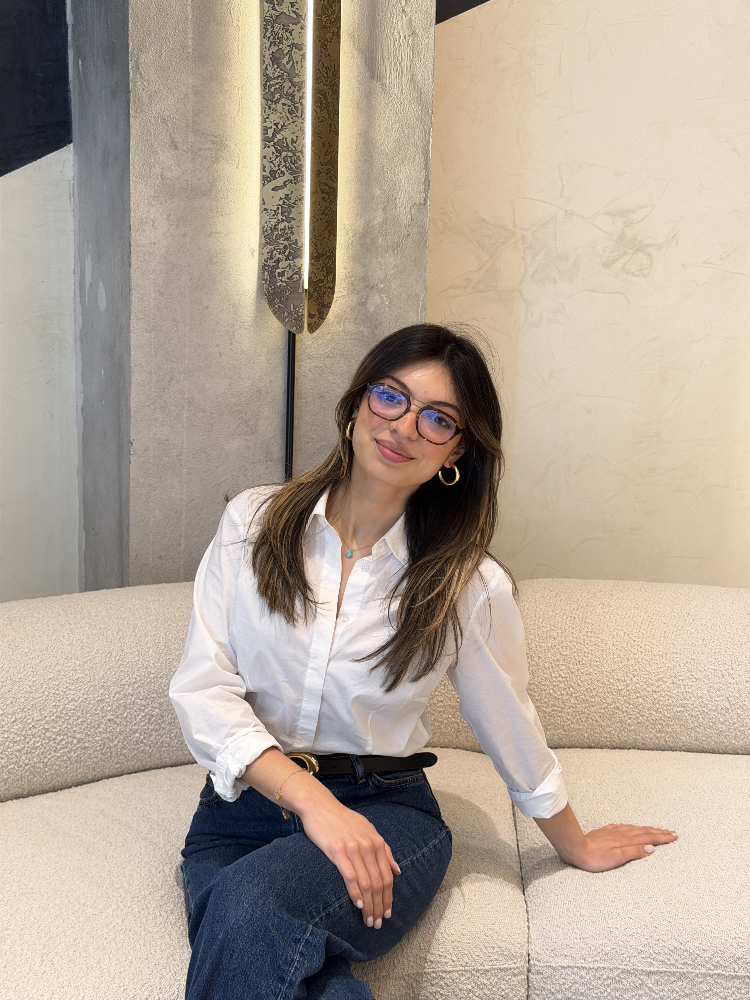

BDR → AI Ops Specialist (EMEA). One year building pipeline. Now ready to build the systems that power it.

Databricks Academy · Academy Accreditation. Core foundation for the AI Ops role.
Databricks Academy · Knowledge Badge. Hands-on with RAG and agent architectures.
Databricks Academy · Academy Accreditation. Platform fluency from the ground up.
Started on EMEA French-speaking territory, building enterprise pipeline from day one.
Recognized by peers for leadership, communication, and driving team culture across EMEA.
Finished the year among the top performers globally. 156% of annual quota.
Moved to a new territory after 10 months — recognition of resilience and adaptability.
Ready to bring GTM insight and operational excellence to the technical side of Databricks. The role that was always waiting.
I have a confession to make: I chose business school partly to run away from maths. Not because I wasn't good at it — I studied both a Bachelor's in Mathematics & IT and a Master's in Business Management — but because somewhere along the way I let a quiet limiting belief convince me that the analytical world wasn't really for me. I built a career in sales and partnerships instead, and honestly, I loved it.
"Working at Databricks, surrounded by data engineers and AI researchers, I stopped watching from the sidelines and started leaning back in."
I picked up SQL basics, started tinkering with no-code automation tools, and began genuinely enjoying the moments when I could bridge a business need and a technical solution. The AI Ops Specialist role feels like the role that was always waiting for me to be ready for it.
What I know I bring — and what I am genuinely passionate about — is enablement. Over the past year at Databricks UAE, I have built and run Lunch & Learns, Genie AI/BI Office Hours, and internal learning sessions designed to help colleagues and customers actually understand and adopt what our platform can do. I don't just hand people documentation and walk away; I stay until the thing clicks. That instinct runs deeper than work — outside of Databricks, I founded and run Club Cookie, a social club built around bringing people together and creating shared experiences from scratch. Building community, driving engagement, making people actually show up — it's what I do by default.
My year as a BDR supporting enterprise and mid-market accounts has been a masterclass in managing moving parts with precision. I have coordinated large-scale campaigns, built tracking systems for migration pipelines, and served as the connective tissue between Account Executives, partners like Capgemini and Fractal, and end customers. The QA mindset, the SOP discipline, the stakeholder communication across time zones: I live this already.
What this role adds — and what excites me most — is the technical depth. I am not starting from zero: my mathematical background never left me, and I have been actively rebuilding that muscle. In the past two months alone, I have earned three Databricks Academy credentials: AI Agent Fundamentals, Building Retrieval Agents on Databricks, and Databricks Fundamentals — not because I was asked to, but because I wanted to understand what I would be operating. I want to be the person who can write a custom query to surface a performance gap, refine a prompt based on QA findings, and speak fluently to both the sales team and the engineering team. I am building toward that, and I am doing it at Databricks — with the best possible foundation.
I am deeply motivated by what Databricks is building in EMEA — and I want to be part of operationalising it from the inside, not just selling it from the outside. I would love the opportunity to speak with you about how my background, energy, and trajectory align with what the AI Ops team needs.
Running EMEA campaigns, migration tracking — precision at scale is how I operate.
Lunch & Learns, Genie AI/BI Office Hours, Club Cookie — I make people show up and actually adopt things.
SQL from my Bachelor's, Salesforce/SOQL workflows in the field. Ready to go deeper with custom queries.
French patch, UAE patch. Cross-cultural stakeholder communication across time zones is second nature.
Moved to UAE patch in 10 months. I thrive in ambiguity — AI Ops runs on exactly that.
Maths & IT background. Actively rebuilding that muscle — no-code tools, AI experimentation, SQL daily.